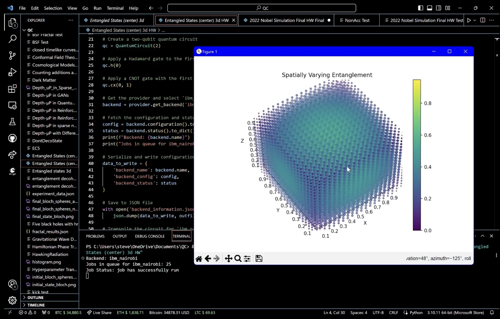
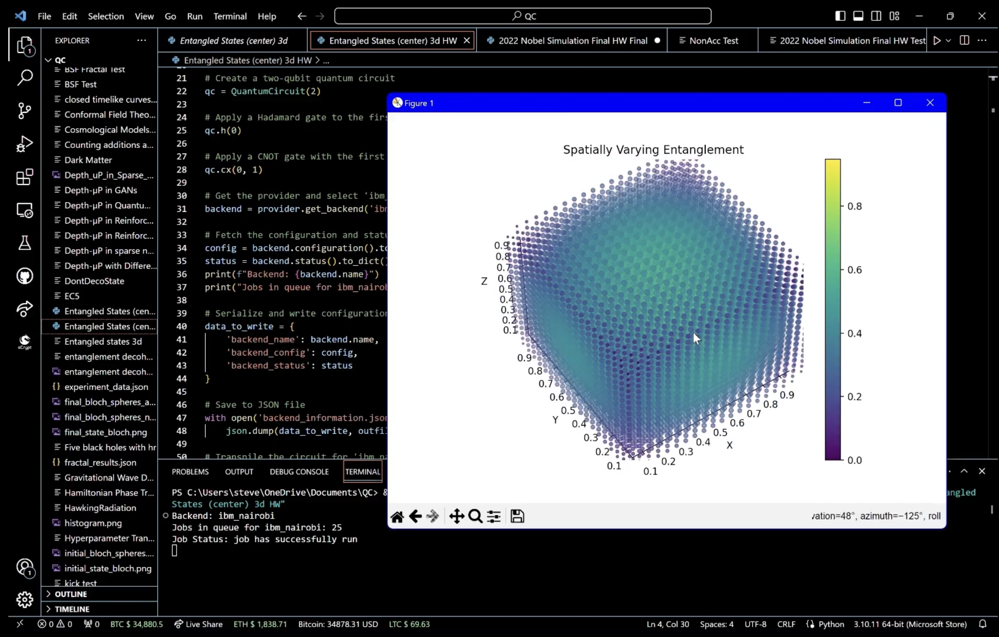

Visualizing Two-Qubit Superposition on IBM's 7 Qubit Nairobi Quantum Computer
This experiment aims to create and analyze quantum entanglement between two qubits using IBM's 7 qubit quantum computer "ibm_nairobi." Quantum entanglement is a phenomenon where the quantum states of two or more particles become intertwined, and the state of each particle cannot be described independently of the state of the others, regardless of the distance separating them. The experiment, using Qiskit, starts by applying quantum gates to manipulate the states of the qubits, observing the entanglement through measurement, and interpreting the results statistically. One of my favorite visuals of entanglement on this thread, now on a real system.
Code Walkthrough
1. Initialization:
We begin with two qubits in the default state ∣0⟩, the quantum equivalent of the binary '0'. The combined initial state of our two-qubit system is ∣00⟩.
2. Application of the Hadamard Gate (H-gate) on the First Qubit:
A Hadamard gate is applied to the first qubit, which puts it into a superposition state. The Hadamard transformation (H) is represented by the matrix:
H = 1/sqrt(2) * (1, 1, 1, −1)
The action of H on ∣0⟩ produces the state:
H∣0⟩ = 1/sqrt(2) * (∣0⟩+∣1⟩)
The new state of the system is:
1/sqrt(2) * (∣00⟩+∣10⟩)
3. Controlled-NOT Gate (CNOT) Application:
A CNOT gate uses one qubit to control another, flipping the target qubit's state from ∣0⟩ to ∣1⟩ (or vice versa) if the control qubit is in state ∣1⟩. Its matrix representation is:
CNOT=(1, 0, 0, 0, 0, 1, 0, 0, 0, 0, 0, 1, 0, 0, 1, 0)
Applying the CNOT gate to our state results in the entangled state:
1/sqrt(2) * (∣00⟩+∣11⟩)
This is because the second qubit is flipped only when the first qubit is ∣1⟩, which is true for the second term of our superposition.
4. Measurement:
We measure the qubits, which collapses the superposition to one of the possible states (∣00⟩ or ∣11⟩) with equal probability, due to the nature of the entanglement.
5. Execution on Quantum Hardware:
The transpiled (optimized for quantum processor "ibm_nairobi") circuit is sent to the IBM quantum computer for execution. The backend executes the instructions.
6. Result and Analysis:
The results are retrieved as a distribution of counts that indicate how often each possible outcome was measured. These are presented in a histogram, reflecting the probabilities extracted from the quantum state measurements, three json files (experiment's configuration, experimental data, plot data), and a rendered 3D plot.
7. Json Result Data:
The experiment's configuration, shot records, plot data, and status data are serialized into three JSON files (experiment_results, backend_information, 3d_plot_data) for record-keeping and future analysis.
8. 3D Plot:
For a visual analysis, we create a 3D scatter plot using a grid of points, where the entanglement degree is indicated by color intensity, demonstrating how entanglement varies across the qubit state space. The distance of points from the center of a cube, normalized between 0 and 1, represents the strength of entanglement, providing a spatial representation of entangled states.
distances = np.sqrt((X - 0.5)**2 + (Y - 0.5)**2 + (Z - 0.5)**2)
In the end, this experiment visualizes quantum entanglement, using IBM's quantum computer Nairobi, in a three-dimensional space. Superposition allows a qubit to occupy a multitude of states until measured, and entanglement links the state of one qubit with another. The entangled states are visualized using a histogram of measurement outcomes, showing the probability distribution of the qubits' correlated states. A 3D scatter plot is rendered to represent the degree of entanglement across a range of potential quantum states, with color gradients indicating the strength of correlation, providing a visual interpretation of the entanglement.
Code:
import numpy as np
import qiskit
import json
from datetime import datetime
from qiskit import QuantumCircuit, transpile
from qiskit.visualization import plot_histogram
import matplotlib.pyplot as plt
from qiskit_ibm_provider import IBMProvider
# Extend the default JSON serializer to handle complex numbers and datetime objects
def default_serializer(obj):
if isinstance(obj, complex):
return {"real": obj.real, "imag": obj.imag}
elif isinstance(obj, datetime):
return obj.isoformat()
raise TypeError(f"Object of type {obj.__class__.__name__} is not JSON serializable")
# Initialize the IBMProvider with your API key
provider = IBMProvider(token='Your_Token_Here') # Replace with your actual token
# Create a two-qubit quantum circuit
qc = QuantumCircuit(2)
# Apply a Hadamard gate to the first qubit
qc.h(0)
# Apply a CNOT gate with the first qubit as control and the second as target
qc. cx(0, 1)
# Get the provider and select 'ibm_nairobi'
backend = provider.get_backend('ibm_nairobi')
# Fetch the configuration and status for 'ibm_nairobi'
config = backend.configuration().to_dict()
status = backend.status().to_dict()
print(f"Backend: {backend. name}")
print("Jobs in queue for ibm_nairobi:", status['pending_jobs'])
# Serialize and write configuration and status to a JSON file
data_to_write = {
'backend_name': backend. name,
'backend_config': config,
'backend_status': status
}
# Save to JSON file
with open('backend_information.json', 'w') as outfile:
json.dump(data_to_write, outfile, default=default_serializer, indent=4)
# Transpile the circuit for 'ibm_nairobi'
t_qc = transpile(qc, backend, optimization_level=3)
# Monitor and execute the job
from qiskit. tools.monitor import job_monitor
job = backend. run(t_qc, shots=1024)
job_monitor(job) # Monitor the job's execution
result = job.result()
# Get the counts of the quantum circuit run results
counts = result.get_counts(qc)
# Serialize and write the counts to a JSON file
counts_data_to_write = {
'counts': counts
}
# Save counts to JSON file
with open('experiment_results.json', 'w') as outfile:
json.dump(counts_data_to_write, outfile, default=default_serializer, indent=4)
# Plot a histogram of the counts
plot_histogram(counts)
plt.savefig('histogram.png') # Save the histogram plot
plt. show()
# The following code is for the 3D plot visualization part
# Create a 3D grid of points
grid_length = 20
x = np.linspace(0, 1, grid_length)
y = np.linspace(0, 1, grid_length)
z = np.linspace(0, 1, grid_length)
X, Y, Z = np.meshgrid(x, y, z)
# Calculate the distance of each point from the center
distances = np.sqrt((X - 0.5)**2 + (Y - 0.5)**2 + (Z - 0.5)**2)
# Normalize the distances to be between 0 and 1
normalized_distances = distances / np.max(distances)
# Use the normalized distances to represent the degree of entanglement
entanglement_degree = 1 - normalized_distances
# Create the 3D scatter plot
fig = plt.figure()
ax = fig.add_subplot(111, projection='3d')
sc = ax.scatter(X, Y, Z, c=entanglement_degree.flatten(), cmap='viridis', s=100 * entanglement_degree.flatten())
ax.set_title('Spatially Varying Entanglement')
ax.set_xlabel('X')
ax.set_ylabel('Y')
ax.set_zlabel('Z')
plt.colorbar(sc)
plt.savefig('3d_entanglement_plot.png') # Save the 3D plot
plt. show()
# Serialize and save the 3D plot data
plot_data = [{'x': X[i][j][k], 'y': Y[i][j][k], 'z': Z[i][j][k], 'entanglement_degree': entanglement_degree[i][j][k]}
for i in range(grid_length) for j in range(grid_length) for k in range(grid_length)]
with open('3d_plot_data.json', 'w') as f:
json.dump(plot_data, f, default=default_serializer, indent=4)
 

Results
You can see the visualization on the video below.The maximum entanglement degree observed in the dataset is approximately 0.9474, occurring at four unique coordinate sets. These points seem to be near the center or at symmetrical positions, considering their close numerical values. This clustering might suggest a pattern where maximum entanglement is associated with a particular symmetrical arrangement of spatial coordinates.
The minimum entanglement degree is 0.0, found at eight distinct coordinate sets, all at the extremes of the possible values (corners of the space in a cubic model). This is consistent with quantum mechanics, where entanglement typically decreases with distance, and maximal separation (corners of a cube) would naturally exhibit minimal entanglement in a bounded system.
These findings suggest that entanglement might be sensitive to both symmetry and separation in this dataset, which aligns with various quantum mechanics principles where both these factors can significantly impact quantum states.
Linear Regression Baseline:
Mean Squared Error (MSE):
0.0287, which indicates the average squared difference between the observed actual outturns and the model's predictions. A lower MSE suggests a better fit to the data.
R^2 score:
−0.0006, which represents the proportion of the variance in the dependent variable that is predictable from the independent variables.
Polynomial Regression with Quadratic Features:
MSE:
0.0010, a significant improvement over the linear model, showing that the polynomial model captures the data's structure much more effectively.
R2 score:
0.9638, a very high value indicating that the model explains most of the variance in entanglement degrees from the test data, suggesting a good fit.
The results from the polynomial regression model suggest that the relationship between spatial coordinates and the entanglement degree is non-linear and that the quadratic terms help in capturing this non-linearity. This is coherent with the expectations for physical phenomena in quantum mechanics, where relationships are rarely linear, and factors such as superposition and entanglement create complex dependencies.
Given the high R^2 score of the polynomial regression model, it seems like a promising approach to modeling entanglement degree based on spatial coordinates.
ibm_nairobi Information:
The 'ibm_nairobi' is a seven-qubit device, part of the Falcon family, revision 5.11, indicating a medium-sized quantum processor in IBM's lineup, suitable for intermediate-scale quantum experiments.
The device supports a variety of quantum operations, with basic gates like CX, ID, RZ, SX, and X. These operations form the foundation for constructing a wide range of quantum algorithms.
The definitions for identity (ID), rotation around the Z-axis (RZ), sqrt-NOT (SX), and NOT (X) operations are specified, which are crucial for quantum state preparation and manipulation.
The coupling_map shows which qubits are connected and capable of two-qubit operations like the CX gate, which is essential for understanding the device's entanglement capabilities.”